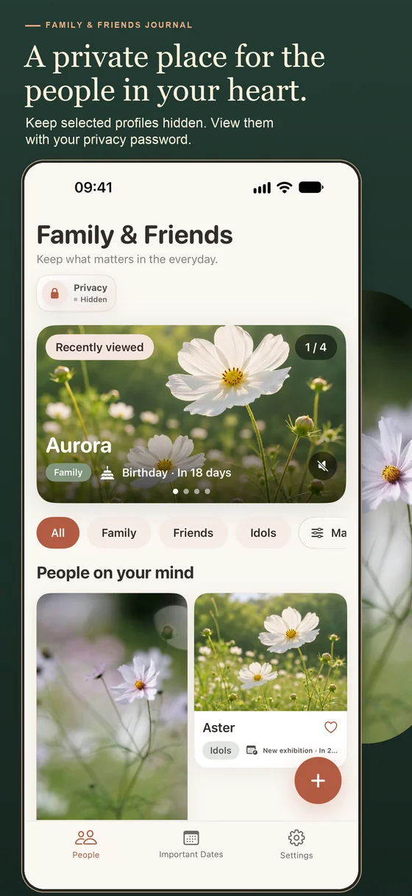
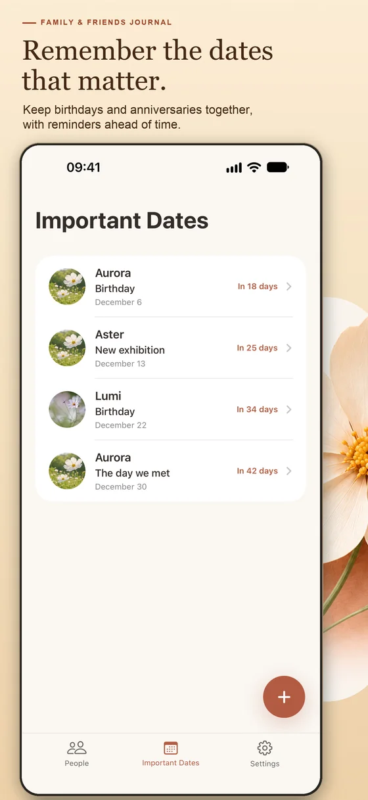

Create a profile and photo journal
Add a photo or Live Photo cover, keep moments with photos and videos, and use custom fields for details worth remembering.
iPhone · iOS 17 or later
Bring each person’s photos, memories and birthday into one place. Set reminders for important dates and file personal documents by person.
Records and imported media stay on your iPhone.

Make a private profile for a parent, partner, child or close friend, and add only what you want to remember.
Add a photo or Live Photo cover, keep moments with photos and videos, and use custom fields for details worth remembering.
Record birthdays and other important dates. Schedule local reminders and add selected dates to Apple Calendar when you choose.
Scan, photograph or import documents. You can hide selected profiles behind a private-record password.
Open Important Dates to see upcoming birthdays and anniversaries with the person each date belongs to. Set reminders for the dates that matter to you.

Yes. The app supports both Gregorian and lunar birthdays and can schedule local reminders.
The app has no developer-operated server. Version 1.0 keeps profiles and imported media on your iPhone, with iCloud sync disabled.
The free plan includes three people and ten media items per person. The optional one-time Pro purchase removes those limits.